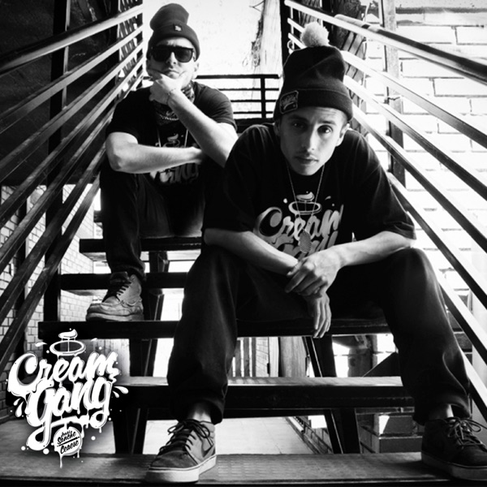
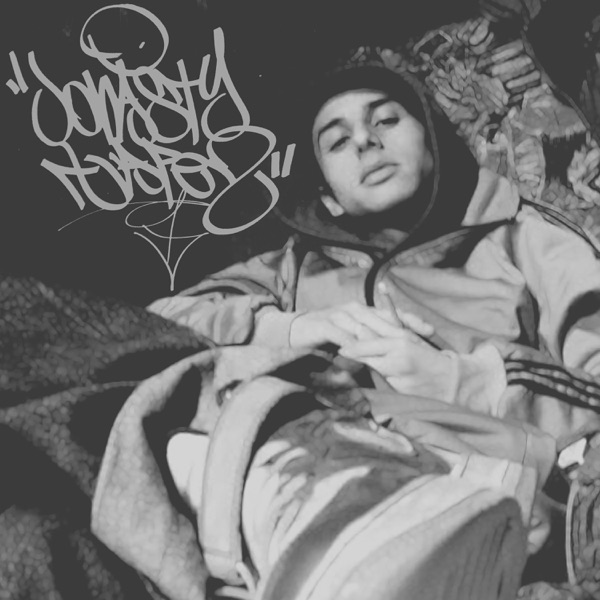
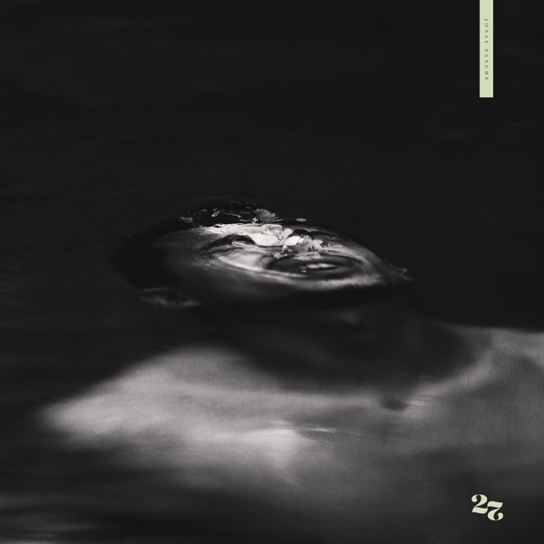
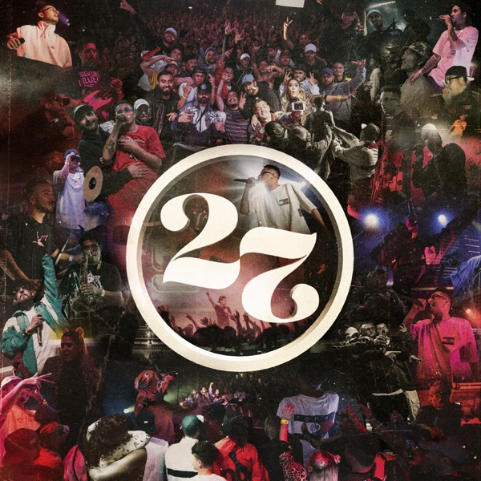
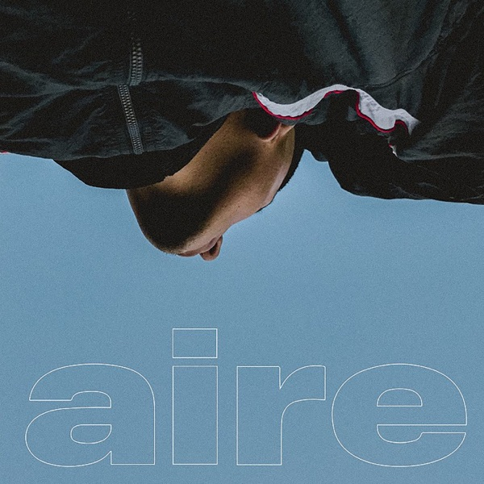
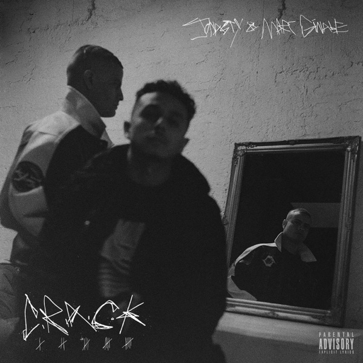
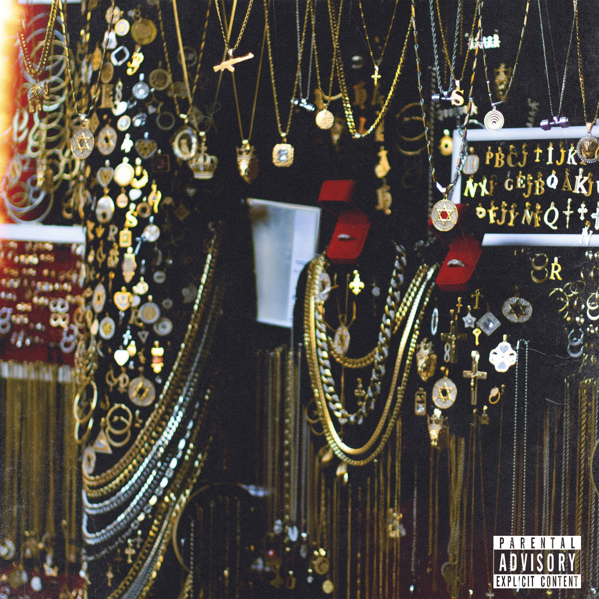
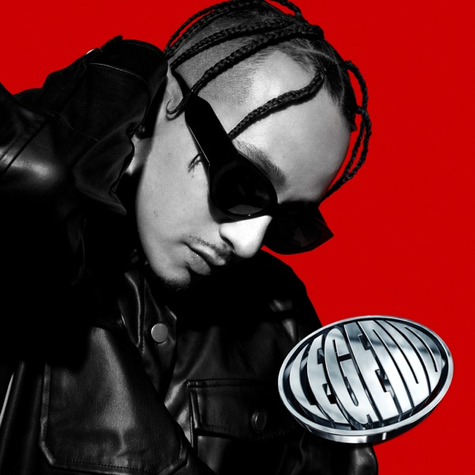
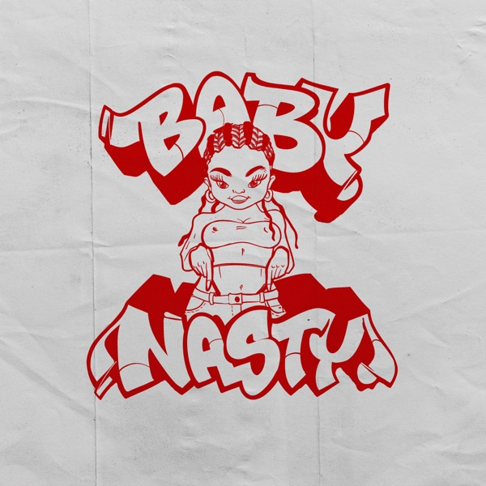
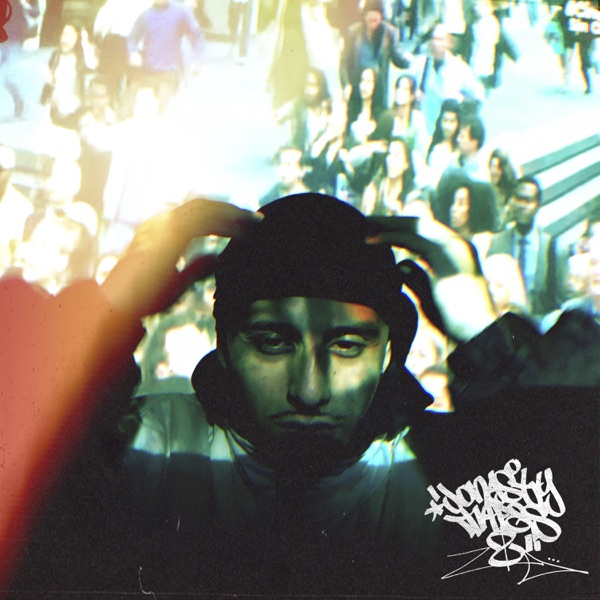

Verdades, la voz de la avenida (2012)
Álbum debut. Incluye «Días Grises», con Ceaese y Yaero; «Estar Así», con Chystemc; y «Llevo Dependiendo».
Álbumes, mixtapes, EP y grabaciones en vivo, ordenados por año de publicación: de Verdades, la voz de la avenida (2012) a JONASTY TAPES 2 (2026).
Álbum debut. Incluye «Días Grises», con Ceaese y Yaero; «Estar Así», con Chystemc; y «Llevo Dependiendo».

Álbum colaborativo junto a Ceaese.

Mixtape de 21 canciones que reúne material de la etapa posterior a su debut.

Segundo álbum solista. Incluye «Piso 13», «Tesla», «Máximo Gorki» y «Te busqué».

Álbum en vivo vinculado al repertorio de 27.

EP que incluye «My Mind», «Diferencias», «Para mí» y «Calma».

EP colaborativo junto al rapero venezolano Lil Supa.

Álbum producido por Macrodee. Reúne diez canciones con invitados como Antioch, Chystemc, Elbruto CHR y Brown Sugar.

Álbum con colaboraciones de artistas como Dano, Lil Supa y Akapellah.
EP de cinco canciones, entre ellas «Morder el polvo», «Sin miedo a morir» y «Dejavú».

Álbum junto a Soulnastyy, con invitados como DrefQuila, Movimiento Original, Penyair y Sick Jacken.
Álbum colaborativo junto al rapero argentino Urbanse.

Segunda entrega de Jonasty Tapes, con colaboraciones de Ana Tijoux, JEM, Lord Sucio, Angus'D y Audigier.